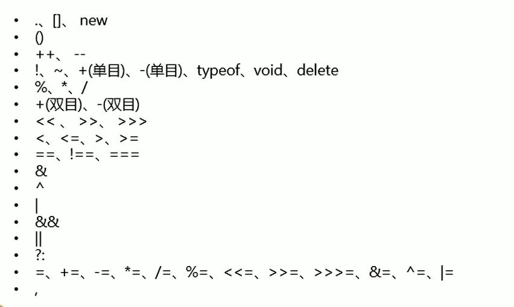

<!DOCTYPE html>
<html>
	<head>
		<meta charset="UTF-8">
		<title></title>
		<script>
			/*
			 * , 运算符
			 * 使用,可以分割多个语句,一般可以在声明多个变量时使用
			 * 
			 */
			//使用,运算符同时声明多个变量并赋值
			//var a=1 , b=2 , c=3;
			//alert("a="+a);
			
			
			/*
			 * 运算符的优先级，就和数学中一样
			 * 在JS中运算符也有优先级，比如：先乘除 后加减
			 * img中的表
			 * 越往上优先级越高，先计算
			 * 可以通过括号()改变运算的顺序
			 */
			
			//var result = 1 + 2 * 3;
			//console.log("result = "+result);
			
			
			//与&&的优先级比或||的高
			//先算2&&3结果为3，再算1||3结果为1
			var result = 1 || 2 && 3;
			console.log("result = "+result);
			
			
			
			
		</script>
	</head>
	<body>
        <!--
		    
		-->
	</body>
</html>
